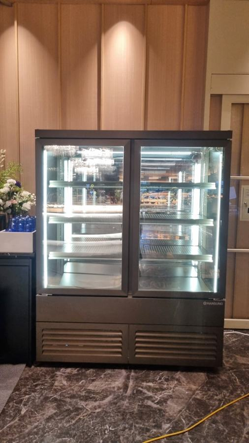
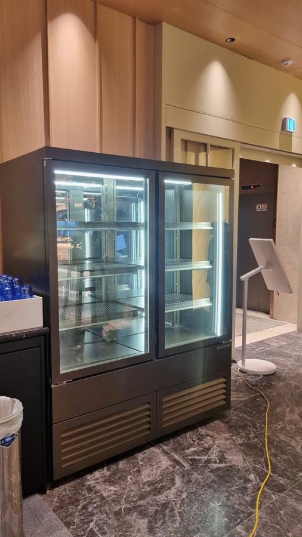

한성제품
냉장쇼케이스 중고, 유리·쿨러·선반부터 확인하세요

냉장쇼케이스 중고를 볼 때는 겉모양보다 유리 열선이 살아 있어 김이 서리지 않는지, 뒷벽 쿨러가 고르게 냉기를 돌리는지, 설정 온도와 실제 온도가 맞는지를 먼저 확인하세요. 이 세 가지 중 하나라도 어긋나거나 매장 크기와 맞지 않는다면 새로 맞추는 쪽과 비교해 보시는 게 안전합니다.
안녕하세요. 카페와 음식점, 소매점에 들어가는 냉장쇼케이스를 공장에서 직접 만드는 한성쇼케이스입니다.
창업 준비를 하다 보면 쇼케이스 견적을 받고 한숨부터 나오는 순간이 있습니다. 그래서 중고 거래 사이트를 먼저 열어 보시는 사장님이 많은데, 사진만으로는 상태를 알기 어렵다는 게 가장 큰 고민이죠.
냉장쇼케이스는 일반 냉장고와 달리 상품을 보여 주면서 동시에 차갑게 지켜야 하는 장비라, 확인해야 할 부위도 다릅니다.
문짝과 외관이 깨끗해도 유리 열선이나 쿨러가 지쳐 있으면 진열한 상품이 김에 가려지고 칸마다 온도가 달라집니다.
오늘은 냉장쇼케이스 중고 매물을 볼 때 어디부터 확인하면 좋은지, 그리고 어떤 경우에 새로 맞추는 게 나은지 정리해 보겠습니다.
1. 유리에 김이 서리는지
냉장쇼케이스 유리에는 결로를 막는 히팅 열선이 들어가는 경우가 많습니다. 이 열선이 끊기거나 약해지면 유리에 습기가 차서 닦아도 금방 다시 뿌옇게 됩니다.
매물을 보러 가시면 전원을 켜고 충분히 식힌 뒤 유리 전면을 살펴보세요. 특정 부분만 김이 서리거나 모서리에 물방울이 고인다면 열선이나 단열에 문제가 있을 수 있습니다.
습한 여름에 보면 더 정확합니다.
- 전원을 켜고 충분히 식힌 뒤 유리 전면을 확인하세요.
- 유리 모서리와 프레임 접합부에 물이 고이는지 보세요.
- 유리에 금이나 실링 들뜸이 없는지 살펴보세요.
2. 냉기가 고르게 도는지
진열용 냉장쇼케이스는 뒷벽 쿨러가 후면 전체에서 냉기를 순환시켜 선반 앞뒤, 위아래의 온도 차이를 줄이는 구조가 많습니다.
팬이 하나라도 약해지면 특정 칸만 미지근해집니다.
온도계를 두세 개 챙겨 가서 맨 위 칸 앞쪽과 맨 아래 칸 안쪽에 놓고 비교해 보세요. 차이가 크면 쿨러나 팬 상태를 의심해 볼 만합니다.
팬에서 덜컹거리는 소리가 나는지도 귀 기울여 들어 보세요.


3. 선반과 센서 상태
타공 선반은 선반 사이로 냉기가 흐르게 하면서 찬 바람이 상품에 직접 닿는 것을 막아 줍니다. 선반이 휘었거나 다른 제품 선반으로 바뀌어 있으면 냉기 흐름이 달라질 수 있습니다.
설정 온도와 실제 온도가 맞는지도 꼭 보세요. 내부 온도를 감지하는 센서가 오래돼 오차가 생기면, 화면에는 정상으로 나와도 상품은 덜 차가운 상태로 진열됩니다.
폐기가 늘어나는 원인이 되죠.
4. 매장 크기와 A/S
중고 매물은 이전 매장 자리에 맞춰 만든 크기라, 상태가 좋아도 내 매장 벽에 맞지 않으면 진열 칸이 남거나 통로를 막습니다.
특히 작고 협소한 매장일수록 맞는 매물을 찾기 어렵습니다.
고장 났을 때 수리받을 곳이 있는지도 확인하세요. 구매한 매장이 아니면 A/S를 받기 어려운 경우가 많은데, 한성쇼케이스는 오래된 쇼케이스냉장고 중고 제품도 A/S를 진행하고 있어 수리 가능 여부를 상담해 드립니다.
- 설치 자리 폭과 출입문 폭을 먼저 재 두세요.
- 제조사와 모델명을 확인해 A/S 가능 여부를 물어보세요.
체크리스트
- 유리 열선 작동과 결로 여부
- 칸별 온도 차이와 쿨러 팬 소리
- 타공 선반 상태
- 설정 온도와 실제 온도 일치 여부
- 매장 실측 폭과 반입 경로
- 제조사·모델명과 A/S 가능 여부
현장에서 자주 보는 경우: 매장이 좁아 맞는 중고를 찾지 못할 때
카페나 음식점 창업을 준비하며 쇼케이스 비용이 부담돼 중고를 알아보다가, 매장이 너무 작아 사이즈가 맞는 매물을 찾지 못해 연락을 주시는 경우가 많습니다.
중고로 사자니 하자가 걱정되고, 기성 신제품은 자리에 애매하게 들어가는 상황이죠.
한성쇼케이스는 유통 기업이 아니라 제조 공장에서 소비자에게 바로 공급하는 구조라, 매장 공간과 규격에 맞춘 새 제품을 합리적인 선에서 맞춰 드릴 수 있습니다.
디자인과 규격을 정하고 설치까지 꼼꼼하게 진행하며, 판매 이후의 A/S까지 책임집니다. 중고와 새 맞춤 제작을 같은 조건으로 놓고 비교해 보시길 권해 드립니다.




자주 묻는 질문
중고 냉장쇼케이스는 몇 년 된 것까지 괜찮을까요?
햇수보다 어디서 어떻게 썼는지와 유리 열선, 쿨러, 센서 상태가 더 중요합니다. 연식을 알 수 없거나 상태 확인이 어렵다면 신중하게 판단하세요.
다른 곳에서 산 중고 쇼케이스도 수리받을 수 있나요?
한성쇼케이스는 오래된 쇼케이스 중고 제품도 A/S를 진행하고 있습니다. 제조사와 모델명, 증상을 알려 주시면 수리 가능 여부를 먼저 안내해 드립니다.
중고와 맞춤 제작 중 무엇이 나은지 어떻게 판단하나요?
상태가 확인되고 매장 크기에 딱 맞는 매물이라면 중고도 선택지가 됩니다. 크기가 맞지 않거나 수리비가 예상된다면 맞춤 제작 견적과 함께 비교해 보세요.
매장 조건에 맞춰 만드는 한성쇼케이스
원하시는 제품 사진과 설치할 공간 사진만 보내 주셔도 매장에 맞는 구성을 추천해 드립니다.
- 전국 240여 개 A/S 전담 센터 운영
- 본사 대량 자재 매입으로 품질 대비 합리적인 가격
- 유럽제·삼성 냉각 콤프레셔 적용
- 국내 최초 쇼케이스 전문 디자이너 상주
매장 폭과 원하는 진열 구성을 알려 주세요. 실측과 견적을 안내해 드립니다.
031-986-2458